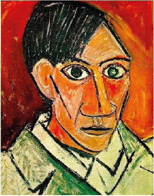
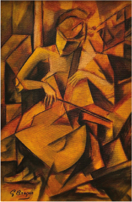
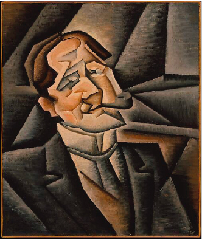
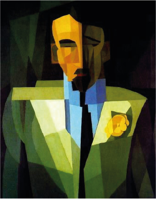

Inicio
Historia
Origen en Paris
Cubismo Analitico
Cubismo Sintetico
Contexto Historico
Artistas
Pablo Picasso
George Braque
Juan Gris
Emilio Pettoruti
Obras
Legado
Influencia en el arte moderno
Impacto en arquitectura y diseño
Cultura y Literatura
Presencia en la cultura contemporanea
Influencia
Relacion con la fotografia
Influencia en la primera guerra mundial
ARTISTAS

Pablo Picasso 1881 - 1973

George Braque 1882 - 1963

Juan Gris 1887 - 1927

Emilio Pettoruti 1882 - 1971